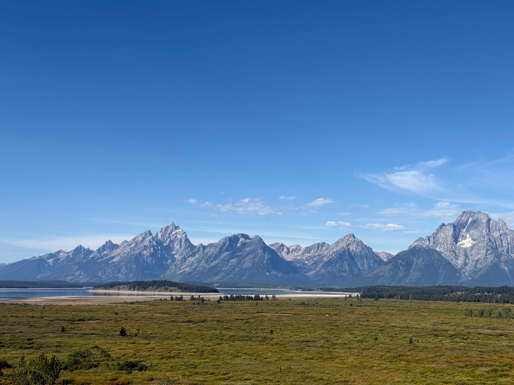

Rhythm R. Banerjee
Jackson Hole, Wyoming
Profile
Economist and strategist
Rhythm is an economist, strategist and a specialist in financial machine learning with experience in listed equities, fixed income, derivatives, and commodity risk. His research focuses on global macroeconomics, financial stability, sustainable finance, and asset pricing. He trained in economics at the University of Cambridge and the Geneva Graduate Institute (IHEID), and attended Ashoka University.
He has worked as an asset manager in London and Geneva, and in central banking in India. He has also consulted some of the leading Artificial Intelligence labs on model development and efficiency.
01 / Research
Research library
Economics
Policy & development
02 / Media & recognition
Features and coverage
Geneva Graduate Institute2022
Spending Green to Make Green: Sustainable Financing for Clean Energy
Oxford Politics2020
Mongolia’s Debt Overhang Amidst a Pandemic
Geneva Graduate Institute2020
Can Investing in an Energy Transition Help the World Recover Post-Covid-19?
Ashoka University2018
Feature for the Award in the Chinese Academic Olympics, 15th Challenge Cup
Sohu2017
Chinese media coverage of the 15th Challenge Cup Award
Sina CN News2017
Chinese media coverage of the 15th Challenge Cup Award
Xinmin2017
Chinese media coverage of the 15th Challenge Cup Award
Times of India2016
Global Citizen India
03 / Writing & reports